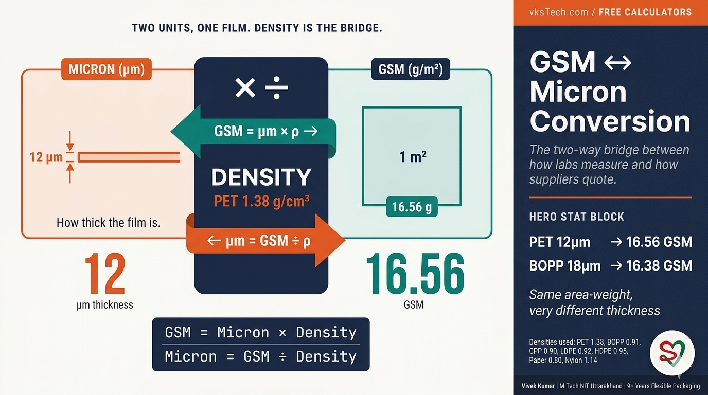
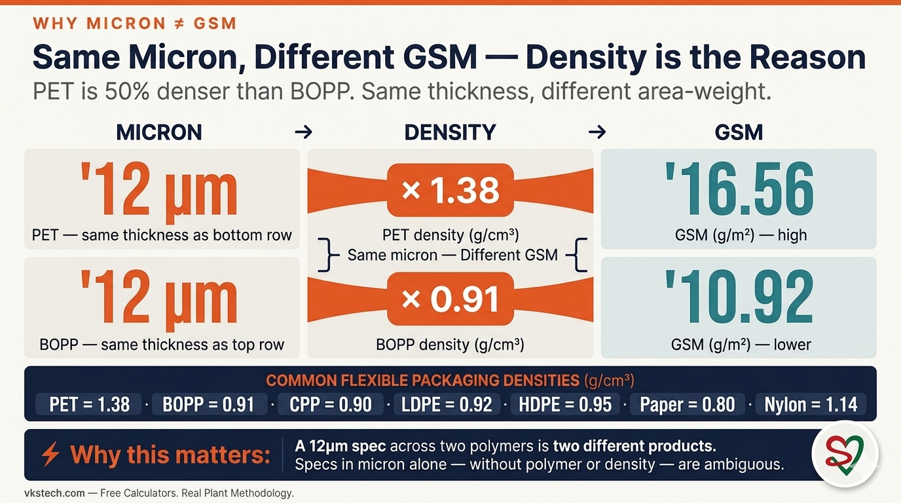
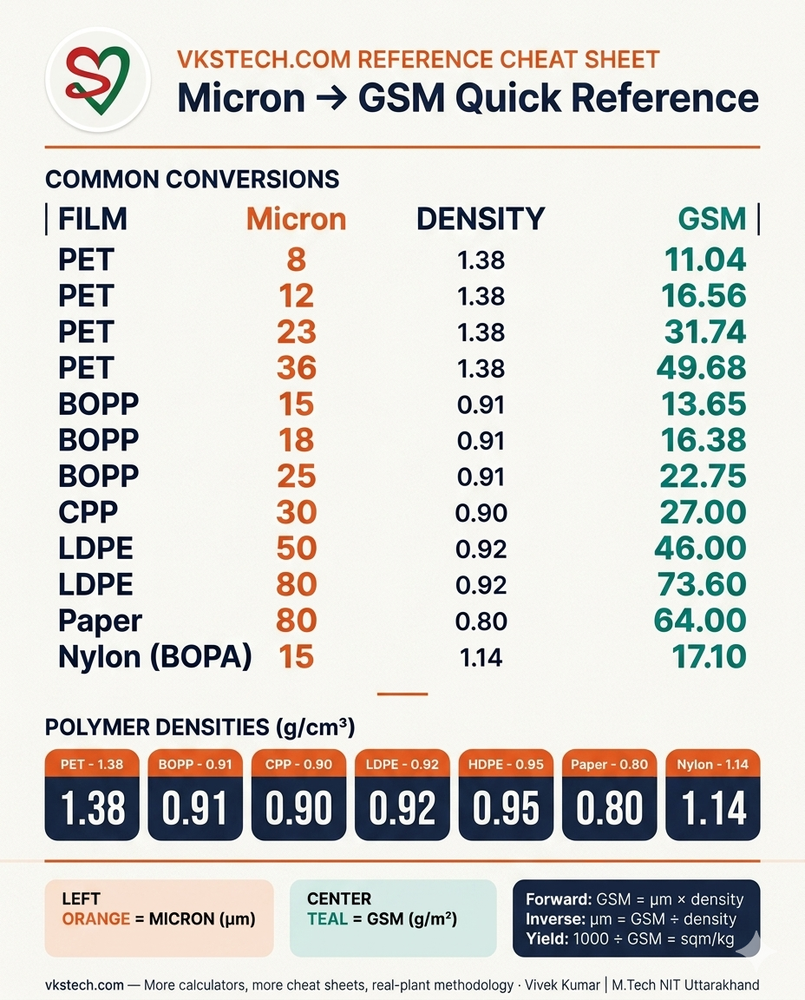
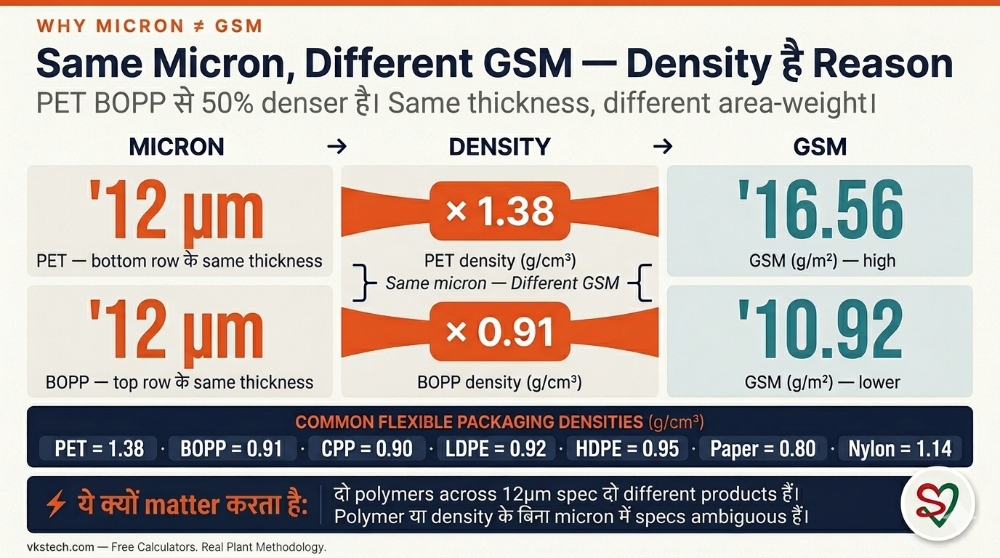

📖 9-min read | The Underlying Conversion Behind Cost, Yield, and Spec Discussions | Published May 2026
An incoming roll arrives at the lab. The technician weighs a 100mm × 100mm coupon, gets 0.166 grams, divides by area, reports 16.6 GSM. The procurement team has a spec sheet that says "PET 12μm." The customer's print job specifies a film "around 16 GSM." Three departments, three different units describing the same film. This blog explains the formula behind the free GSM ↔ Micron Conversion calculator on vkstech.com — what it computes, why both directions matter, the six real situations where the conversion is the difference between a good decision and a bad one, and how density quietly drives the entire equation.

Micron measures thickness — how thick the film is, end-on. GSM measures area-weight — how many grams of material occupy 1 square metre of film. The two are related by density (g/cm³), which says how heavy a unit volume of the polymer is. PET (1.38 g/cm³) is dense for a plastic — almost as dense as water. BOPP (0.91 g/cm³) is light — actually less dense than water, which is why scrap BOPP floats and scrap PET sinks. The same micron of PET and BOPP gives different GSM because the same volume of material weighs different amounts.
This single fact is the reason GSM and micron are not interchangeable. A 12μm PET film and a 12μm BOPP film have the same physical thickness but different GSM (16.56 vs 10.92). A 16 GSM PET film and a 16 GSM BOPP film have the same area-weight but different thicknesses (11.6μm vs 17.6μm). Whether you compare in GSM or in micron changes which film looks "thinner." And if you skip the density step entirely and just compare microns across polymers, you are comparing the wrong thing.
What density values to use: PET 1.38, BOPP 0.91 (some specialty grades 0.89-0.92), CPP 0.90, LDPE 0.92, HDPE 0.95, Paper 0.80 (kraft, varies a lot by sizing and coating), Nylon BOPA 1.14, EVOH 1.20. For laminates, use a weighted average of the layer densities — but for spec-sheet conversations, single-layer densities are what matter 90% of the time.
1. Incoming material inspection. The QC lab weighs a coupon and gets a GSM number. The purchase order specified microns. The conversion lets QC say "this matches your 12μm PET spec to within 1%" or "this is actually 10μm — the supplier downgauged without notice." Without the conversion, the GSM number is just a number, not a spec compliance check.
2. Downgauging analysis. Engineering proposes "let's go from 12μm PET to 10μm PET to save cost." The cost-per-kg might stay the same, but the GSM drops from 16.56 to 13.8 — and that GSM drop is exactly the cost saving (in ₹/sqm). The conversion turns a thickness change into a procurement number.
3. Customer spec translation. One customer sends a tech spec in GSM ("we need 17 GSM PET"). Another sends it in micron ("we need 12μm PET"). Both might mean the same thing, or they might be shopping for different products. The converter has to translate both into the same units before comparing or quoting.
4. Substrate substitution. A customer asks "can you replace PET with BOPP at the same GSM?" The PET film is 12μm / 16.56 GSM. To match GSM with BOPP, you need 16.56 ÷ 0.91 = 18.2μm — significantly thicker. The conversion makes the trade-off visible: same area-weight, more bulk, possibly different mechanical properties.
5. Cost-per-sqm calculations. The cost calculator (covered in Blog #36) needs GSM as an input. If the supplier quoted in micron and the customer thinks in ₹/sqm, this conversion is the first of the two steps. Skipping it is the most common procurement error.
6. Print plate planning. Print pre-press teams sometimes spec films in GSM (because ink consumption is per area, not per thickness). Production teams spec in micron (because that is what unwinds, slits, and seals). The two teams need to be talking about the same film — the conversion is the translation layer.
The calculator below has both directions in one tool. Toggle between Micron → GSM (Mode A) and GSM → Micron (Mode B). For shareable links and other related tools, use the full version on vkstech.com.
The table below covers the most common micron specs Indian flexible-packaging plants run, with their corresponding GSM. Bookmark or screenshot for spec-discussion meetings.
| Film type | Density (g/cm³) | Micron | GSM | Typical use |
|---|---|---|---|---|
| PET | 1.38 | 8 μm | 11.04 | Premium downgauged metallised |
| PET | 1.38 | 12 μm | 16.56 | Standard metallised PET base |
| PET | 1.38 | 23 μm | 31.74 | Heavy-duty laminate base |
| PET | 1.38 | 36 μm | 49.68 | Strapping, industrial |
| BOPP | 0.91 | 15 μm | 13.65 | Lightweight clear film |
| BOPP | 0.91 | 18 μm | 16.38 | Standard snack laminate base |
| BOPP | 0.91 | 25 μm | 22.75 | Premium snacks, label face |
| CPP | 0.90 | 30 μm | 27.00 | Sealing layer |
| LDPE | 0.92 | 50 μm | 46.00 | Standard sealant layer |
| LDPE | 0.92 | 80 μm | 73.60 | Heavy-duty sealant |
| Paper | 0.80 | 80 μm | 64.00 | Kraft laminate base |
| Nylon (BOPA) | 1.14 | 15 μm | 17.10 | Pierce-resistant outer layer |
Notice the BOPP 18μm row (16.38 GSM) and the PET 12μm row (16.56 GSM) — almost identical area-weight, very different micron. This is exactly why suppliers cannot quote "BOPP at PET prices" without specifying the gauge. Both films use the same amount of material per square metre, but the BOPP option is half-again as thick. Mechanical properties, sealing performance, and machine handling all change.
A third unit shows up in industry conversations: yield, in sqm per kg. It is the inverse of GSM, scaled. Yield = 1000 ÷ GSM. PET 12μm has GSM 16.56, so yield = 60.4 sqm/kg. BOPP 18μm has GSM 16.38, so yield = 61.1 sqm/kg. When a supplier says "this film yields 60 sqm per kg," they are stating GSM = 16.7 g/m² in disguise. Useful for cost engineers because cost per sqm = cost per kg ÷ yield — but procurement teams who default to thinking in micron-or-GSM sometimes find yield confusing. The calculator covers all three views.
1. Using a generic "1.0" or "1.4" density for all polymers. The density values vary by 35-70% across common flexible packaging materials. Using the wrong density introduces a corresponding error directly into the GSM. PET (1.38) and Paper (0.80) differ by 73% — confusing them in a spreadsheet flips a 16.56 GSM result into a 9.6 GSM result.
2. Confusing density (g/cm³) with specific gravity (dimensionless). They are numerically identical for water-based references, but the units matter when you build formulas. The GSM × Micron formula needs density expressed as g/cm³ (which is the same as kg/dm³). Using kg/m³ (a value 1000× larger, like "1380" for PET) without unit conversion is a common spreadsheet error.
3. Forgetting that laminates are sums. A 3-ply laminate of PET 12 + foil 9 + LDPE 50 has total GSM = (12 × 1.38) + (9 × 2.70) + (50 × 0.92) = 16.56 + 24.30 + 46.00 = 86.86 GSM. The single-layer formula applied to each layer separately, then summed. (Note: aluminium density is 2.70 g/cm³.) Trying to use the formula on the laminate as a whole with an "average density" gives wrong answers.
📚 Related reads on this site: This blog explains the GSM ↔ Micron Conversion calculator. Blog #36 covers the Cost per Square Metre calculator that uses GSM as its key input. Blog #27 covers Roll Weight, which combines GSM with width and length. Blog #35 explains the Roll OD calculator. The full set of free calculators is at vkstech.com/#calculators.
Working with a polymer not in the dropdown? Need to handle a specialty grade with non-standard density? Want to discuss laminate calculations? Drop your question in the Q&A section at the bottom of this page — I respond personally to every thoughtful question.
📌 What's next. Blog 38 — Production Yield % Calculator — explains the deceptively simple input/output formula and why it gets misapplied so often. Same calculator-deep-dive format as this blog.

📖 9-min read | Cost, Yield, और Spec Discussions के पीछे Underlying Conversion | May 2026 में published
एक incoming roll lab में आता है। Technician 100mm × 100mm coupon weigh करता है, 0.166 grams मिलते हैं, area से divide करता है, 16.6 GSM report करता है। Procurement team के पास spec sheet है जो कहती है "PET 12μm।" Customer का print job एक film "around 16 GSM" specify करता है। तीन departments, तीन different units same film describe करते हुए। ये blog उस formula को explain करता है जो vkstech.com पर free GSM ↔ Micron Conversion calculator के पीछे है — क्या compute करता है, दोनों directions क्यों matter करते हैं, छह real situations जहाँ conversion good और bad decision के बीच का difference है, और density कैसे quietly पूरे equation को drive करती है।

Micron thickness measure करता है — film कितनी thick है, end-on। GSM area-weight measure करता है — कितने grams material 1 square metre film में हैं। दोनों density (g/cm³) से related हैं, जो बताती है कि polymer का unit volume कितना heavy है। PET (1.38 g/cm³) plastic के लिए dense है — almost पानी जितना। BOPP (0.91 g/cm³) light है — actually पानी से कम dense, यही कारण है कि scrap BOPP तैरता है और scrap PET डूबता है। Same micron of PET और BOPP different GSM देते हैं क्योंकि same volume of material का weight different होता है।
यही single fact reason है कि GSM और micron interchangeable नहीं हैं। 12μm PET film और 12μm BOPP film का same physical thickness है पर different GSM (16.56 vs 10.92)। 16 GSM PET film और 16 GSM BOPP film का same area-weight है पर different thicknesses (11.6μm vs 17.6μm)। GSM या micron में compare करना change करता है कि कौन सी film "thinner" लगती है। और अगर density step skip करके सिर्फ़ polymers across microns compare करते हैं, आप ग़लत चीज़ compare कर रहे हैं।
क्या density values use करें: PET 1.38, BOPP 0.91 (कुछ specialty grades 0.89-0.92), CPP 0.90, LDPE 0.92, HDPE 0.95, Paper 0.80 (kraft, sizing और coating से बहुत vary करता है), Nylon BOPA 1.14, EVOH 1.20। Laminates के लिए, layer densities का weighted average use करें — पर spec-sheet conversations के लिए, single-layer densities ही 90% time matter करती हैं।
1. Incoming material inspection। QC lab coupon weigh करती है GSM number मिलता है। Purchase order microns में specify करता है। Conversion QC को कहने देता है "ये आपके 12μm PET spec को 1% within match करता है" या "ये actually 10μm है — supplier ने बिना notice के downgauge किया।" Conversion के बिना, GSM number सिर्फ़ number है, spec compliance check नहीं।
2. Downgauging analysis। Engineering propose करती है "12μm PET से 10μm PET चलें cost saves होगी।" Cost-per-kg same रह सकती है, पर GSM 16.56 से 13.8 drop होती है — और वो GSM drop exactly cost saving है (₹/sqm में)। Conversion thickness change को procurement number में बदलता है।
3. Customer spec translation। एक customer tech spec GSM में भेजता है ("हमें 17 GSM PET चाहिए")। दूसरा micron में भेजता है ("हमें 12μm PET चाहिए")। दोनों same चीज़ mean कर सकते हैं, या different products shop कर रहे हैं। Converter को compare या quote करने से पहले दोनों को same units में translate करना है।
4. Substrate substitution। Customer पूछता है "क्या आप PET को BOPP से same GSM पर replace कर सकते हैं?" PET film 12μm / 16.56 GSM है। BOPP से GSM match करने के लिए, 16.56 ÷ 0.91 = 18.2μm चाहिए — significantly thicker। Conversion trade-off visible बनाता है: same area-weight, ज़्यादा bulk, possibly different mechanical properties।
5. Cost-per-sqm calculations। Cost calculator (Blog #36 में cover किया) को GSM input के रूप में चाहिए। अगर supplier micron में quote करे और customer ₹/sqm में सोचे, ये conversion दोनों steps में से पहला है। Skip करना सबसे common procurement error है।
6. Print plate planning। Print pre-press teams कभी films को GSM में spec करती हैं (क्योंकि ink consumption per area है, per thickness नहीं)। Production teams micron में spec करती हैं (क्योंकि वो जो unwinds, slits, और seals होता है)। दोनों teams को same film के बारे में बात करनी है — conversion translation layer है।
नीचे calculator के दोनों directions एक tool में हैं। Micron → GSM (Mode A) और GSM → Micron (Mode B) के बीच toggle करें। Shareable links और दूसरे related tools के लिए, vkstech.com पर full version use करें।
नीचे की table सबसे common micron specs cover करती है जो Indian flexible-packaging plants run करते हैं, उनके corresponding GSM के साथ। Spec-discussion meetings के लिए bookmark या screenshot करें।
| Film type | Density (g/cm³) | Micron | GSM | Typical use |
|---|---|---|---|---|
| PET | 1.38 | 8 μm | 11.04 | Premium downgauged metallised |
| PET | 1.38 | 12 μm | 16.56 | Standard metallised PET base |
| PET | 1.38 | 23 μm | 31.74 | Heavy-duty laminate base |
| PET | 1.38 | 36 μm | 49.68 | Strapping, industrial |
| BOPP | 0.91 | 15 μm | 13.65 | Lightweight clear film |
| BOPP | 0.91 | 18 μm | 16.38 | Standard snack laminate base |
| BOPP | 0.91 | 25 μm | 22.75 | Premium snacks, label face |
| CPP | 0.90 | 30 μm | 27.00 | Sealing layer |
| LDPE | 0.92 | 50 μm | 46.00 | Standard sealant layer |
| LDPE | 0.92 | 80 μm | 73.60 | Heavy-duty sealant |
| Paper | 0.80 | 80 μm | 64.00 | Kraft laminate base |
| Nylon (BOPA) | 1.14 | 15 μm | 17.10 | Pierce-resistant outer layer |
Notice करें BOPP 18μm row (16.38 GSM) और PET 12μm row (16.56 GSM) — almost identical area-weight, very different micron। यही exactly reason है कि suppliers gauge specify किए बिना "BOPP at PET prices" quote नहीं कर सकते। दोनों films per square metre same material use करते हैं, पर BOPP option half-again as thick है। Mechanical properties, sealing performance, और machine handling सब change होते हैं।
एक तीसरी unit industry conversations में show होती है: yield, sqm per kg में। ये GSM का inverse है, scaled। Yield = 1000 ÷ GSM। PET 12μm का GSM 16.56 है, तो yield = 60.4 sqm/kg। BOPP 18μm का GSM 16.38 है, तो yield = 61.1 sqm/kg। जब supplier कहता है "ये film 60 sqm per kg yield करती है," वो disguise में GSM = 16.7 g/m² state कर रहा है। Cost engineers के लिए useful क्योंकि cost per sqm = cost per kg ÷ yield — पर procurement teams जो micron-or-GSM में सोचने में default होती हैं कभी yield को confusing पाती हैं। Calculator तीनों views cover करता है।
1. सब polymers के लिए generic "1.0" या "1.4" density use करना। Density values common flexible packaging materials में 35-70% vary करती हैं। ग़लत density use करना directly GSM में corresponding error introduce करता है। PET (1.38) और Paper (0.80) 73% differ करते हैं — spreadsheet में confuse करना 16.56 GSM result को 9.6 GSM में flip कर देता है।
2. Density (g/cm³) को specific gravity (dimensionless) से confuse करना। वो water-based references के लिए numerically identical हैं, पर units matter करती हैं जब आप formulas build करते हैं। GSM × Micron formula को density g/cm³ में expressed चाहिए (जो kg/dm³ के बराबर है)। Without unit conversion kg/m³ (1000× larger value, PET के लिए "1380") use करना common spreadsheet error है।
3. ये भूलना कि laminates sums हैं। PET 12 + foil 9 + LDPE 50 का 3-ply laminate का total GSM = (12 × 1.38) + (9 × 2.70) + (50 × 0.92) = 16.56 + 24.30 + 46.00 = 86.86 GSM। Single-layer formula हर layer पर separately apply, फिर sum। (Note: aluminium density 2.70 g/cm³ है।) Whole laminate पर "average density" से formula use करने की कोशिश ग़लत answers देती है।
📚 इस site पर related reads: ये blog GSM ↔ Micron Conversion calculator explain करता है। Blog #36 Cost per Square Metre calculator cover करता है जो GSM को key input use करता है। Blog #27 Roll Weight cover करता है, जो GSM को width और length के साथ combine करता है। Blog #35 Roll OD calculator explain करता है। Free calculators का full set vkstech.com/#calculators पर है।
Dropdown में नहीं किसी polymer के साथ काम कर रहे हैं? Non-standard density वाले specialty grade handle करना है? Laminate calculations discuss करना चाहते हैं? अपना सवाल इस page के bottom पर Q&A section में डालें — मैं हर thoughtful question का personally जवाब देता हूँ।
📌 आगे क्या। Blog 38 — Production Yield % Calculator — explain करेगा deceptively simple input/output formula और क्यों इसे इतनी बार misapply किया जाता है। Same calculator-deep-dive format इस blog की तरह।